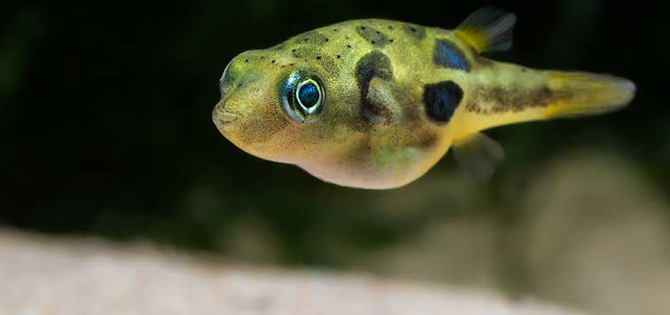

Koi

ABOUT
Koi or more specifically nishikigoi, are colored varieties of the Amur carp that are kept for decorative purposes in outdoor koi ponds or water gardens. Koi is an informal name for the colored variants of C. rubrofuscus kept for ornamental purposes. Wikipedia Higher classification: Common carp Lifespan: 25 – 35 years Rank: Animal breed Scientific name: Cyprinus rubrofuscus Variety: C. r. var. "koi" Family: Cyprinidae Order: Cypriniformes
Butterfly telescope goldfish
.jpg)
ABOUT
The Butterfly telescope goldfish is a variant of telescope goldfish that is distinguished by the butterfly-shaped caudal fins when viewed from above. It is a variety that has only recently been deemed a major lineage by a few published works. Wikipedia Higher classification: Goldfish Rank: Animal breed Scientific name: Carassius auratus
Bubble Eye

ABOUT
The Bubble Eye is a small variety of fancy goldfish with upward-pointing eyes that are accompanied by two large fluid-filled sacs. It is a dorsal-less fish – good specimens will have a clean back and eye bubbles that match in color and size. Wikipedia Higher classification: Goldfish Rank: Animal breed Scientific name: Carassius auratus
Panda corydoras

ABOUT
Corydoras panda is a species of catfish belonging to the genus Corydoras, of the family Callichthyidae, and is a native member of the riverine fauna of South America. Wikipedia Scientific name: Corydoras panda Family: Callichthyidae
Dwarf pufferfish
ABOUT
The dwarf pufferfish, also known as the Malabar pufferfish, pygmy pufferfish, or pea pufferfish, is a small freshwater pufferfish endemic to Kerala and southern Karnataka in Southwest India. They are popular in aquaria for their bright colours and small size. Wikipedia Scientific name: Carinotetraodon travancoricus Conservation status: Vulnerable (Population decreasing) Encyclopedia of Life Family: Tetraodontidae Kingdom: Animalia Order: Tetraodontiformes
Tiger barb

ABOUT
The tiger barb or Sumatra barb, is a species of tropical cyprinid fish. The natural geographic range reportedly extends throughout the Malay Peninsula, Sumatra and Borneo in Indonesia, with unsubstantiated sightings reported in Cambodia. Wikipedia Scientific name: Puntigrus tetrazona Family: Cyprinidae Kingdom: Animalia Order: Cypriniformes Phylum: Chordata
Dwarf Gourami

ABOUT
The dwarf gourami is a species of gourami native to South Asia. Wikipedia Scientific name: Trichogaster lalius Family: Osphronemidae Order: Anabantiformes
Betta Fish

ABOUT
The Siamese fighting fish, commonly known as the betta, is a freshwater fish native to Southeast Asia, namely Cambodia, Laos, Myanmar, Malaysia, Indonesia, Thailand, and Vietnam. Wikipedia Lifespan: 2 – 5 years (In captivity) Clutch size: 100 – 500 Conservation status: Vulnerable (Population decreasing) Encyclopedia of Life Scientific name: Betta splendens Higher classification: Bettas Family: Osphronemidae Kingdom: Animalia
Hachetfish

ABOUT
The freshwater hatchetfish are a family, Gasteropelecidae, of ray-finned fish from South and Central America. The common hatchetfish is the most popular member among fish keeping hobbyists. The family includes three genera: Carnegiella, Gasteropelecus, and Thoracocharax. Wikipedia Scientific name: Gasteropelecidae
Black Phantom Tetra

ABOUT
The Black phantom tetra is an egg-scattering species. To stimulate breeding, pH is lowered to about 5.5-6, the general hardness of the water is also reduced below four degrees.
Midas cichlid

ABOUT
Amphilophus citrinellus is a large cichlid fish endemic to the San Juan River and adjacent watersheds in Costa Rica and Nicaragua. In the aquarium trade A. citrinellus is often sold under the trade name of Midas cichlid. Wikipedia Scientific name: Amphilophus citrinellus Found in: San Juan River Higher classification: Amphilophus Family: Cichlidae Kingdom: Animalia Order: Cichliformes Phylum: Chordata
Frontosa

ABOUT
Cyphotilapia frontosa, also called the front cichlid and frontosa, is an east African species of fish endemic to Lake Tanganyika. The genus name is a combination of the Ancient Greek "cypho-", meaning "curved", and tilapia, which means "fish" in a local dialect. Wikipedia Conservation status: Least Concern Encyclopedia of Life Class: Actinopterygii Family: Cichlidae Genus: Cyphotilapia Species: C. frontosa
Catfish

ABOUT
Catfish are a diverse group of ray-finned fish. Named for their prominent barbels, which resemble a cat's whiskers, catfish range in size and behavior from the three largest species alive, the Mekong ... Wikipedia Scientific name: Siluriformes Lifespan: Wels catfish: 60 years Higher classification: Ostariophysi Rank: Order Kingdom: Animalia Order: Siluriformes; G. Cuvier, 1817 Sting
Discus

ABOUT
Symphysodon, colloquially known as discus, is a genus of cichlids native to the Amazon river basin in South America. Due to their distinctive shape, behavior, and bright colors and patterns, discus are popular as freshwater aquarium fish, and their aquaculture in several countries in Asia is a major industry. Wikipedia Scientific name: Symphysodon Family: Cichlidae Kingdom: Animalia Order: Cichliformes Phylum: Chordata Tribe: Heroini
ONLINE_SHOPPING
1.PETS
2.PLANTS
3.PETS-ACCESSORIES
4.PLANTS-ACCESSORIES
5.PETS-SPA & PETS-CARE
6.PLANTS-CARE
7.ADD-YOUR PRODUCTS
COSTOMER POLICIES
CONTACT US
TERMS OF USE
TRACK ORDERS
SHIPPING
RETURNS
PRIVACY POLICY